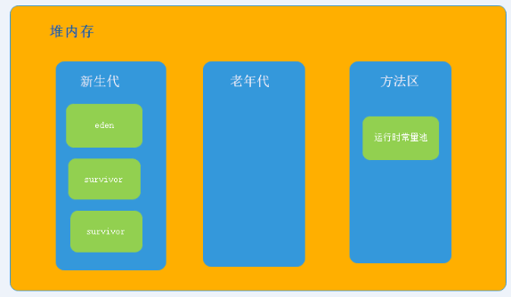
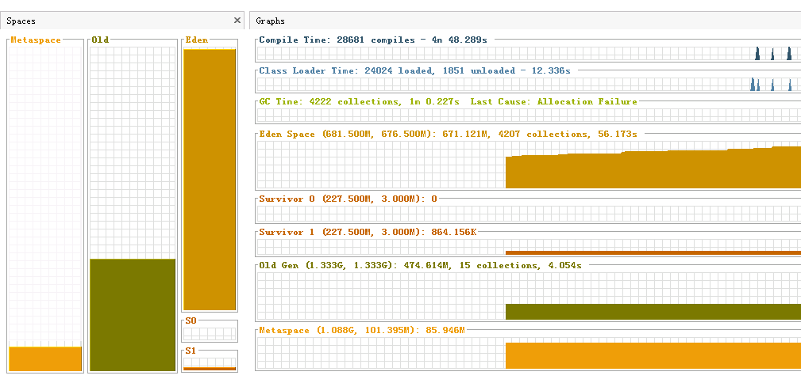

新生代
新生代分为
eden区和2个survivor区，默认比例为8:1:1可通过参数
-XX:SurvivorRatio=8进行配置默认大小为物理内存的 1/64
垃圾收集策略：复制算法
eden区
当我们使用
new关键字创建对象的时候该对象被分配在堆内存中的新生代中的eden区中
survivor区
进行一些GC后仍存活的对象进入
survivor区，survivor区默认有2块空间，s0和s1，有1块一直都为空
老年代
为新生代提供担保机制。当创建的对象无法在新生代分配时或在新生代经历多次GC（默认15次）后仍存活的对象会被分配到老年代
垃圾收集策略：标记整理
大对象直接进入老年代
大对象：需要大量连续内存空间的对象，例如：长字符串和数组
-XX：PretenureSizeThreshold=3145728（3M）当创建的对象大于该值时直接在老年代分配（该参数只对Serial和ParNew收集器有效）
1 | /** |
1 | Heap |
上述代码中将大于3M的对象直接分配到老年代
长期存活的对象进入老年代
对象在
eden中出生后且经过一次GC后且可以被Survivor容纳的话该对象的Age就为1，在Survivor中每经过一次GC该对象的Age就会+1，当它的Age到一定阈值（默认为15）后就晋升到老年代-XX：MaxTenuringThreshold=1 对象晋升老年代阈值
1 | /** |
1 | [GC[DefNew |
allocation1对象需要256KB内存，
Survivor空间可以容纳，所以在第一次GC时allocation1会进入Survivor空间，在第二次GC时它进入了老年代
动态对象年龄判定
虚拟机并不是永远要求对象的年龄必须达到
MaxTenuringThreshold才晋升到老年代，如果Survivor空间中相同年龄所有对象大小的总和大于Survivor空间的一半，年龄大于或等于该年龄的对象直接进入老年代，无需等到MaxTenuringThreshold中要求的年龄
1 | /** |
1 | [GC[DefNew |
上述代码运行结果中
Survivor空间占用率为0%，而老年代有1168K被占用了，说明了allocation1和allocation2对象都直接进入了老年代，而没有等到15岁的临界年龄。他们加起来达到了512K，并且是同年的，满足同年对象达到Survivor空间的一半规则

GC日志说明
1 | [GC[DefNew |
GC：说明了本次GC日志类型，其他类型：FullGC，如果是FullGC则说明本次GC是Stop-The-World
DefNew：说明了本次GC发生的区域，其他类型：Tenured（老年代），Perm（永久带）。这里显示的区域名称与GC收集器密切相关，例如：
ParNew收集器则显示为ParNew，如果是ParallelScavenge则为PSYoungGen方括号里的7093K->1024K(9216K)：GC前该区域已使用的容量 -> GC后该区域已使用的容量（该内存区域总容量）
放括号外的7093K->1264K(19456K)：GC前堆区已使用容量 -> GC后堆区已使用容量（堆总容量）
0.0068300 secs：表示新生代垃圾收集时间
0.0069039 secs：整个堆区垃圾收集时间
Times：user（用户态消耗的CPU时间）， sys（内核态消耗的CPU时间）, real（墙钟时间）